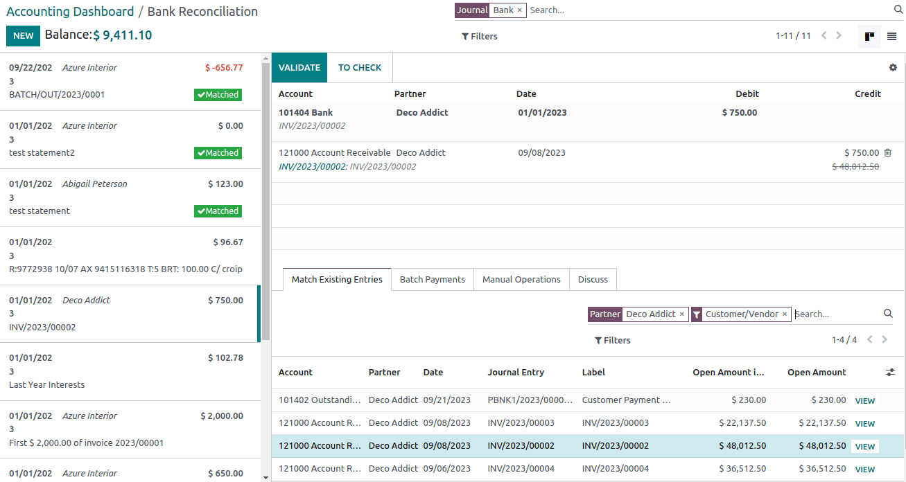
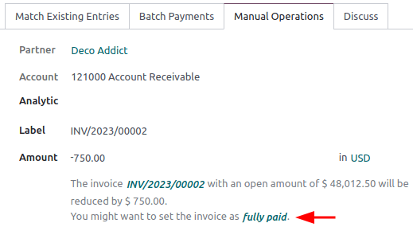

Bank reconciliation¶
Bank reconciliation is the process of matching your bank transactions with your business records, such as customer invoices, vendor bills, and payments. Not only is this compulsory for most businesses, but it also offers several benefits, such as reduced risk of errors in financial reports, detection of fraudulent activities, and improved cash flow management.
Thanks to the bank reconciliation models, Odoo pre-selects the matching entries automatically.
Bank reconciliation view¶
To access a bank journal’s reconciliation view, go to your Accounting Dashboard and either:
click the journal name (e.g., Bank) to display all transactions, including those previously reconciled or
click the Reconcile items button to display all transactions Odoo pre-selected for reconciliation. You can remove the Not Matched filter from the search bar to include previously reconciled transactions.
The bank reconciliation view is structured into three distinct sections: transactions, counterpart entries, and resulting entry.
- Transactions
The transactions section on the left shows all bank transactions, with the newest displayed first. Click a transaction to select it.
- Counterpart entries
The counterpart entries section on the bottom right displays the options to match the selected bank transaction. Multiple tabs are available, including Match existing entries, Batch payments, Manual operations, and Discuss, which contains the chatter for the selected bank transaction.
- Resulting entry
The resulting entry section on the top right displays the selected bank transaction matched with the counterpart entries and includes any remaining debits or credits. In this section, you can validate the reconciliation or mark it as To Check. Any reconciliation model buttons are also available in the resulting entry section.
Reconcile transactions¶
Transactions can be matched automatically with the use of reconciliation models, or they can be matched with existing entries, batch payments, manual operations, and reconciliation model buttons.
Select a transaction among unmatched bank transactions.
Define the counterpart. There are several options for defining a counterpart, including matching existing entries, manual operations, batch payments, and reconciliation model buttons.
If the resulting entry isn’t fully balanced, balance it by adding another existing counterpart entry or writing it off with a manual operation.
Click the Validate button to confirm the reconciliation and move to the next transaction.
Tip
If you aren’t sure how to reconcile a particular transaction and would like to deal with it later, use the To Check button instead. All transactions marked as To Check can be displayed using the To Check filter.
Note
Bank transactions are posted on the journal’s suspense account until reconciliation. At this point, reconciliation modifies the transaction journal entry by replacing the bank suspense account with the corresponding receivable, payable, or outstanding account.
Match existing entries¶
This tab contains matching entries Odoo automatically pre-selects according to the reconciliation models. The entry order is based on reconciliation models, with suggested entries appearing first.
Tip
The search bar within the Match Existing Entries tab allows you to search for specific journal items.
Batch payments¶
Batch payments allow you to group different payments to ease reconciliation. Use the Batch Payments tab to find batch payments for customers and vendors. Similarly to the Match Existing Entries tab, the Batch Payments tab has a search bar that allows you to search for specific batch payments.
Manual operations¶
If there isn’t an existing entry to match the selected transaction, you may instead wish to reconcile the transaction manually by choosing the correct account and amount. Then, complete any of the relevant optional fields.
Tip
You can use the fully paid option to reconcile a payment, even in cases where only a partial payment is received. A new line appears in the resulting entry section to reflect the open balance registered on the Account Receivable by default. You can choose another account by clicking on the new line in the resulting entry section and selecting the Account to record the open balance.
